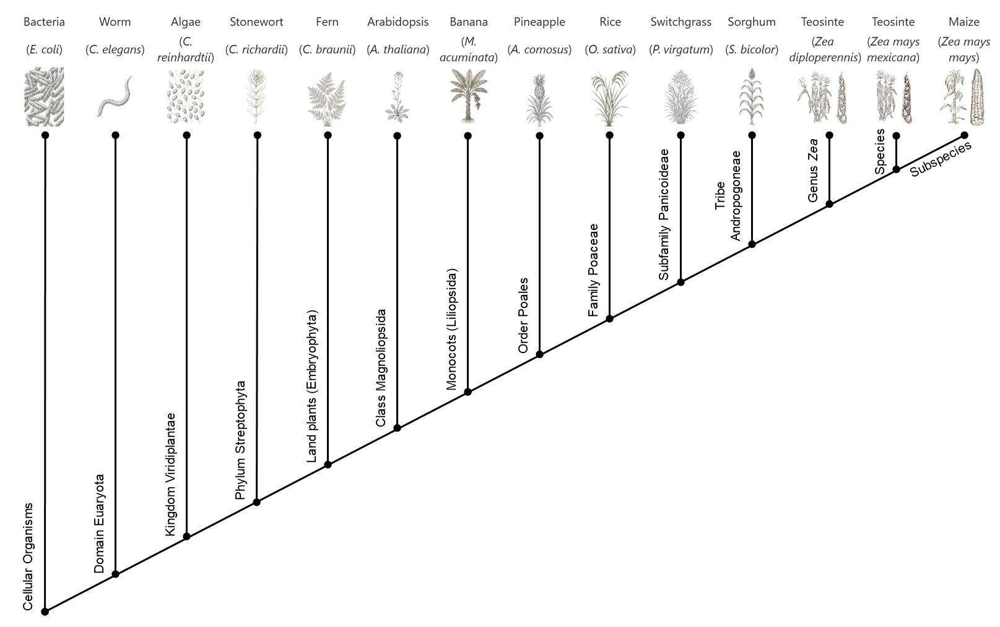
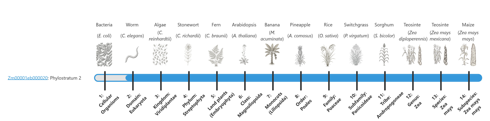
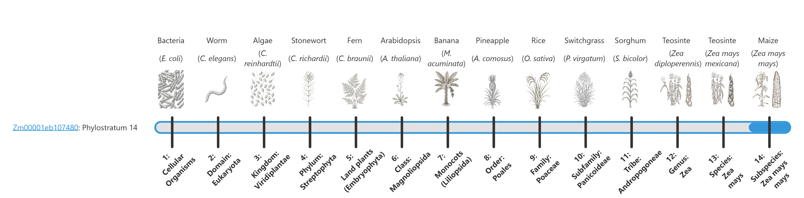
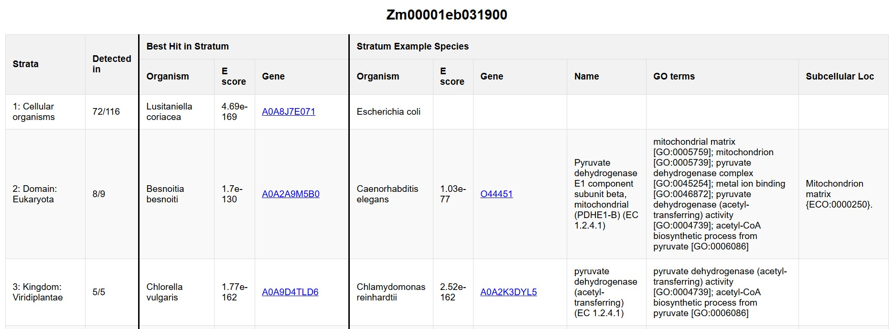

Welcome to the MaizeGDB phylostrata tool!
Phylostratigraphy determines the level of evolutionary conservation of a given protein, shown here on a scale from 1 (cellular organisms, most conserved) to 14 (Zea mays mays, least conserved). For more information, check out the About page.
Search for Genes
Enter up to 100 genes, with one gene ID per line (use Zm-B73-REFERENCE-NAM-5.0 gene IDs):
About Phylostratigraphy
Phylostratigraphy involves identifying the level of evolutionary conservation, or the evolutionary origin, of a given gene. This is accomplished by searching for homologous proteins in increasingly broad phylogenetic groups using protein BLAST. The deepest clade in which significant homolog(s) are found is assigned as that gene's phylostratum.
About the Maize Phylostrata Tool
This webtool was developed to visualize the phylostrata of B73 maize genes as determined using a modified version of phylostratr. Phylostrata results for the full B73 v5 genome as well as for the other maize NAM founders are available in Downloads. The longest isoform of each protein was used.

Here, 14 phylostrata were considered, ranging from the most conserved (Phylostratum 1: Cellular Organisms) to the least conserved (Phylostratum 14: Zea mays mays) (see Fig. 1). Example species were chosen for each phylostratum based on quality of UniProt assemblies, status as model organism, etc.
Search Results
Images
The image for each protein shows its level of evolutionary conservation. The 14 phylostrata are arranged from right to left, from most conserved on the left to least conserved on the right. An example species for each stratum is shown above the bar.
The phylostratum of a given protein is shown in text in the gene name label and visually by the fill of the blue bar. The larger the blue bar, the more conserved it is. For example:


Detail pages
Clicking on a result image will bring you to the gene detail page. Detail pages can also be downloaded from the search results as html or txt files.
The detail page contains 14 rows, one for each phylostratum. There are 11 columns:
- Strata: Number and name of phylostratum.
- Detected in: In how many of the species in this phylostratum was this gene found? For example, homologs of Zm00001eb031900 were identified in 72 out of 116 of the members of the Cellular Organisms phylostratum (see Fig. 4).
- Best Hit in Stratum: These three columns show details for the best hit; that is, the highest-scoring homolog of the gene found in any species within the current phylostratum.
- Organism: Organism in which the best hit was found.
- E value: E value of the best hit.
- Gene: Gene ID of best hit. For most organisms, these are UniProt IDs. For members of Zea and the PanAnd project, these are MaizeGDB IDs. For Ginkgo biloba, these are IDs from the OneKP project.
- Stratum Example Species: These six columns show additional details for the best homolog within the example species for each phylostratum. Because example species were chosen based on annotation quality, status as model organism, etc., these examples are expected to have more data available for follow-up.
- Organism: Example organism for this phylostratum.
- E value: E value of the best hit in the example organism.
- Gene: Gene ID in the example organism. For most organisms, these are UniProt IDs. For members of Zea and the PanAnd project, these are MaizeGDB IDs. For Ginkgo biloba, these are IDs from the OneKP project.
- Name: Gene/protein name in the example organism. For most organisms, these are protein names from UniProt. For members of Zea and the PanAnd project, these are gene descriptions from MaizeMine.
- GO terms: Gene Ontology terms. For most organisms, these are from UniProt. For members of the PanAnd project, these are from MaizeGDB EnTAP results (e.g., Zd-Gigi-REFERENCE-PanAnd-1.0_Zd00001ab.1_entap_results.tsv.gz). For B73, these are from MaizeMine.
- Subcellular Loc: Subcellular location. For most organisms, these are from UniProt. For members of Zea and the PanAnd project, these were identified with DeepLoc2.1.

Further reading
- Zebulun Arendsee, Jing Li, Urminder Singh, Arun Seetharam, Karin Dorman, Eve Syrkin Wurtele (2019) "phylostratr: A framework for phylostratigraphy." Bioinformatics. https://doi.org/10.1093/bioinformatics/btz171
Credits
Contact us at: mgdb@iastate.edu
Downloads
Results files:
Download phylostrata results for each of the NAM founders:
Zm-B73-REFERENCE-NAM-5.0_Zm00001eb.1_phylostrata_results.csv.gz
Zm-B97-REFERENCE-NAM-1.0_Zm00018ab.1_phylostrata_results.csv.gz
Zm-CML103-REFERENCE-NAM-1.0_Zm00021ab.1_phylostrata_results.csv.gz
Zm-CML228-REFERENCE-NAM-1.0_Zm00022ab.1_phylostrata_results.csv.gz
Zm-CML247-REFERENCE-NAM-1.0_Zm00023ab.1_phylostrata_results.csv.gz
Zm-CML277-REFERENCE-NAM-1.0_Zm00024ab.1_phylostrata_results.csv.gz
Zm-CML322-REFERENCE-NAM-1.0_Zm00025ab.1_phylostrata_results.csv.gz
Zm-CML333-REFERENCE-NAM-1.0_Zm00026ab.1_phylostrata_results.csv.gz
Zm-CML52-REFERENCE-NAM-1.0_Zm00019ab.1_phylostrata_results.csv.gz
Zm-CML69-REFERENCE-NAM-1.0_Zm00020ab.1_phylostrata_results.csv.gz
Zm-HP301-REFERENCE-NAM-1.0_Zm00027ab.1_phylostrata_results.csv.gz
Zm-Il14H-REFERENCE-NAM-1.0_Zm00028ab.1_phylostrata_results.csv.gz
Zm-Ki11-REFERENCE-NAM-1.0_Zm00030ab.1_phylostrata_results.csv.gz
Zm-Ki3-REFERENCE-NAM-1.0_Zm00029ab.1_phylostrata_results.csv.gz
Zm-Ky21-REFERENCE-NAM-1.0_Zm00031ab.1_phylostrata_results.csv.gz
Zm-M162W-REFERENCE-NAM-1.0_Zm00033ab.1_phylostrata_results.csv.gz
Zm-M37W-REFERENCE-NAM-1.0_Zm00032ab.1_phylostrata_results.csv.gz
Zm-Mo18W-REFERENCE-NAM-1.0_Zm00034ab.1_phylostrata_results.csv.gz
Zm-Ms71-REFERENCE-NAM-1.0_Zm00035ab.1_phylostrata_results.csv.gz
Zm-NC350-REFERENCE-NAM-1.0_Zm00036ab.1_phylostrata_results.csv.gz
Zm-NC358-REFERENCE-NAM-1.0_Zm00037ab.1_phylostrata_results.csv.gz
Zm-Oh43-REFERENCE-NAM-1.0_Zm00039ab.1_phylostrata_results.csv.gz
Zm-Oh7B-REFERENCE-NAM-1.0_Zm00038ab.1_phylostrata_results.csv.gz
Zm-P39-REFERENCE-NAM-1.0_Zm00040ab.1_phylostrata_results.csv.gz
Zm-Tx303-REFERENCE-NAM-1.0_Zm00041ab.1_phylostrata_results.csv.gz
Zm-Tzi8-REFERENCE-NAM-1.0_Zm00042ab.1_phylostrata_results.csv.gz
Details files:
Download detailed results (includes example species GO terms, etc.) for each of the NAM founders:
Zm-B73-REFERENCE-NAM-5.0_Zm00001eb.1_phylostrata_details.csv.gz
Zm-B97-REFERENCE-NAM-1.0_Zm00018ab.1_phylostrata_details.csv.gz
Zm-CML103-REFERENCE-NAM-1.0_Zm00021ab.1_phylostrata_details.csv.gz
Zm-CML228-REFERENCE-NAM-1.0_Zm00022ab.1_phylostrata_details.csv.gz
Zm-CML247-REFERENCE-NAM-1.0_Zm00023ab.1_phylostrata_details.csv.gz
Zm-CML277-REFERENCE-NAM-1.0_Zm00024ab.1_phylostrata_details.csv.gz
Zm-CML322-REFERENCE-NAM-1.0_Zm00025ab.1_phylostrata_details.csv.gz
Zm-CML333-REFERENCE-NAM-1.0_Zm00026ab.1_phylostrata_details.csv.gz
Zm-CML52-REFERENCE-NAM-1.0_Zm00019ab.1_phylostrata_details.csv.gz
Zm-CML69-REFERENCE-NAM-1.0_Zm00020ab.1_phylostrata_details.csv.gz
Zm-HP301-REFERENCE-NAM-1.0_Zm00027ab.1_phylostrata_details.csv.gz
Zm-Il14H-REFERENCE-NAM-1.0_Zm00028ab.1_phylostrata_details.csv.gz
Zm-Ki11-REFERENCE-NAM-1.0_Zm00030ab.1_phylostrata_details.csv.gz
Zm-Ki3-REFERENCE-NAM-1.0_Zm00029ab.1_phylostrata_details.csv.gz
Zm-Ky21-REFERENCE-NAM-1.0_Zm00031ab.1_phylostrata_details.csv.gz
Zm-M162W-REFERENCE-NAM-1.0_Zm00033ab.1_phylostrata_details.csv.gz
Zm-M37W-REFERENCE-NAM-1.0_Zm00032ab.1_phylostrata_details.csv.gz
Zm-Mo18W-REFERENCE-NAM-1.0_Zm00034ab.1_phylostrata_details.csv.gz
Zm-Ms71-REFERENCE-NAM-1.0_Zm00035ab.1_phylostrata_details.csv.gz
Zm-NC350-REFERENCE-NAM-1.0_Zm00036ab.1_phylostrata_details.csv.gz
Zm-NC358-REFERENCE-NAM-1.0_Zm00037ab.1_phylostrata_details.csv.gz
Zm-Oh43-REFERENCE-NAM-1.0_Zm00039ab.1_phylostrata_details.csv.gz
Zm-Oh7B-REFERENCE-NAM-1.0_Zm00038ab.1_phylostrata_details.csv.gz
Zm-P39-REFERENCE-NAM-1.0_Zm00040ab.1_phylostrata_details.csv.gz
Zm-Tx303-REFERENCE-NAM-1.0_Zm00041ab.1_phylostrata_details.csv.gz
Zm-Tzi8-REFERENCE-NAM-1.0_Zm00042ab.1_phylostrata_details.csv.gz
Details file description:
Each file contain one row per gene per phylostratum. The longest isoform of each protein is used. There are 13 columns:- id: Gene ID
- row: Number of phylostratum
- detect.frac: In how many of the species in this phylostratum was this gene found?
- The next three columns show details for the best hit; that is, the highest-scoring homolog of the gene found in any species within the current phylostratum.
- BestOrg: Organism in which the best hit was found.
- BestE: E value of the best hit.
- BestHit: Gene ID of best hit. For most organisms, these are UniProt IDs. For members of Zea and the PanAnd project, these are MaizeGDB IDs. For Ginkgo biloba, these are IDs from the OneKP project.
- The next six columns show additional details for the best homolog within the example speciesfor each phylostratum. Because example species were chosen based on annotation quality, status as model organism, etc., these examples are expected to have more data available for follow-up.
- ExOrg: Example organism for this phylostratum.
- ExE: E value of the best hit in the example organism.
- Protein Name: Gene ID in the example organism. For most organisms, these are UniProt IDs. For members of Zea and the PanAnd project, these are MaizeGDB IDs. For Ginkgo biloba, these are IDs from the OneKP project.
- GO terms: Gene Ontology terms. For most organisms, these are from UniProt. For members of the PanAnd project, these are from MaizeGDB EnTAP results (e.g., Zd-Gigi-REFERENCE-PanAnd-1.0_Zd00001ab.1_entap_results.tsv.gz). For B73, these are from MaizeMine.
- ExHit: Gene/protein name in the example organism. For most organisms, these are protein names from UniProt. For members of Zea and the PanAnd project, these are gene descriptions from MaizeMine.
- Subcellular Loc: Subcellular location. For most organisms, these are from UniProt. For members of Zea and the PanAnd project, these were identified with DeepLoc2.1.